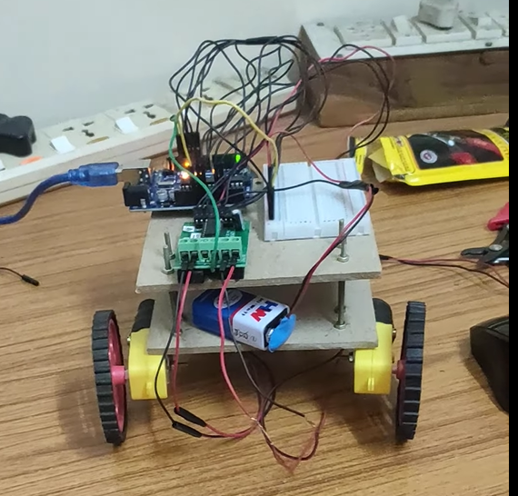
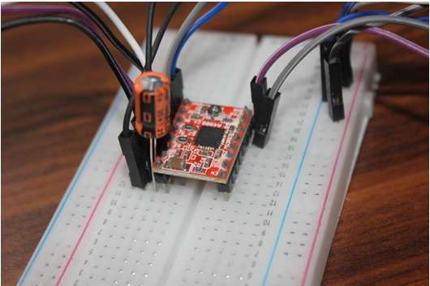

October 2023
Object detection and avoidance bot

Developed an autonomous robot capable of detecting and avoiding obstacles while following predefined paths. Integrated infrared (IR) sensors for real-time obstacle detection and employed a line-following algorithm to ensure accurate path tracking. Utilized DC motors and an L298N motor driver controlled by an Arduino UNO microcontroller board for precise motion control.
March 2023
Modelling and Characterization of flex sensor

This project involves transforming rice husks into activated carbon via pyrolysis, followed by doping with nitrogen and copper enzymes. Sensors are then fabricated on textile substrates using various materials. Mathematical modeling aids in characterization, while motor control is achieved using an A4988 driver and a 100 microfarad capacitor with pulse width modulation. Analysis reveals superior resistance in the biochar-based wire form and wool substrate compared to commercial flex sensors, contributing to the project's objective of enhancing sensor performance.
December 2022
Vonmises stress analysis of L-bracket

Conducted a comprehensive Von Mises stress analysis simulation on an L-bracket using Ansys Student. Key inputs included a Young's modulus of 30 e^6 psi, a Poisson's ratio of 0.27, and a thickness of 0.5 inches. Various pressure loads ranging from 50 to 500 lbs were applied to assess the bracket's structural integrity under varying conditions. The analysis yielded crucial insights, highlighting a maximum stress of 4089.94 psi and a minimum stress of 1.8302 psi.
November 2022
Simulation of Single acting cylinder using AND/OR Gate

Constructed a simulation model using Automation Studio to replicate the behavior of a single-acting cylinder with spring return. Integrated pressure valves, exhausts, and a conditioning unit (FRL) to ensure accurate system representation. Employed logical AND/OR gates for precise control of actuation and retraction processes. This project showcased proficiency in hydraulic system simulation and automation control, demonstrating practical skills in engineering and system modeling.
May 2022
Design and development of cooling device for solar photovoltaic cell

Developed a cooling system for solar panels utilizing organic phase change material RT 42 and aluminum heat sink. Successfully reduced peak sunlight temperature by 15°C, achieving a conversion efficiency of 16%.
June 2022
Vehicle suspension testing and CAD modelling: sae baja

The suspension testing for Ackermann angles on Lotus Shark software involved a comprehensive analysis of the vehicle's dynamic behavior and suspension system performance within a simulated environment. Tests included varying steering inputs and dynamic driving conditions. Key parameters such as wheel deflection, camber, caster, toe, and steering angles were examined across a range of simulated scenarios. Utilized predictive simulations to anticipate the vehicle's handling attributes, ensuring alignment with real-world performance standards